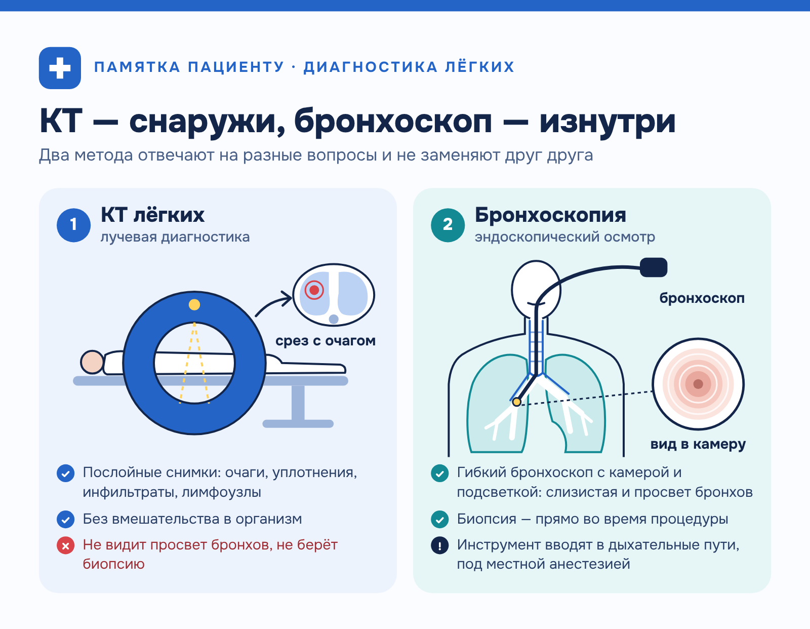
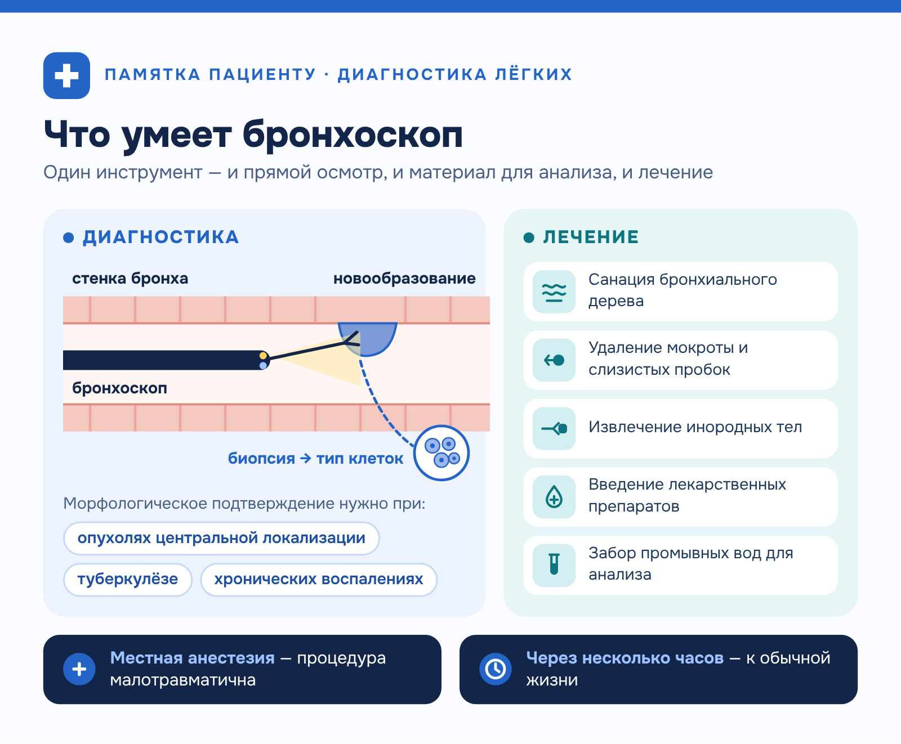

Медицинский центр «ТомоГрад» · Медицина · статья для клиники
Статья для медицинского центра: чем бронхоскопия отличается от КТ лёгких
О заказчикеМедицинский центр «ТомоГрад» (томоград76.рф) — диагностический центр в Ярославле: МРТ, УЗИ, ЭЭГ, ЭМГ; у центра есть отдельный сайт рыбинского направления.
Задача
Объяснить пациентам медицинского центра, чем бронхоскопия отличается от КТ лёгких и почему врач иногда назначает оба исследования. Статья должна снимать тревогу из‑за «двойного» направления и вести на страницы услуг.
Решение
Построила текст вокруг вопроса пациента: сначала принцип каждого метода, потом возможности КТ, задачи бронхоскопии, «можно ли заменить» и типичные сочетания. Различия свела в таблицу. Без обещаний и без пугающих формулировок: про лучевую нагрузку и анестезию сказано спокойно и точно, а решение о порядке обследований оставлено врачу. Ссылки на услуги бронхоскопии и КТ встроены в текст по смыслу.
Результат
Понятная статья для пациентов: читатель понимает, на какой вопрос отвечает каждое исследование и почему одно не заменяет другое.
Чем бронхоскопия отличается от КТ лёгких и когда нужно и то, и другое?
Пациенты с заболеваниями дыхательной системы нередко получают от врача направление сразу на два обследования — эндоскопическое исследование бронхов и компьютерную томографию. Зачем проходить обе процедуры, если обе посвящены лёгким?
Ответ простой: методы решают разные задачи и дают врачу информацию, которую нельзя получить другим способом. В медицинском центре «ТомоГрад» можно сделать бронхоскопию на современном оборудовании под контролем опытных специалистов. Ниже разберём, чем отличаются исследования и в каких случаях нужна комплексная диагностика лёгких.
Два метода — две разные задачи
Компьютерная томография относится к лучевой диагностике. Аппарат с помощью рентгеновского излучения делает послойные снимки грудной клетки. На них видны очаговые изменения, уплотнения, инфильтраты, состояние лимфатических узлов. КТ показывает структуру лёгочной ткани, но не позволяет заглянуть внутрь дыхательных путей.

Бронхоскопия работает иначе. Врач вводит в дыхательные пути тонкий гибкий бронхоскоп с камерой и подсветкой. Видеобронхоскопия даёт детальное изображение слизистой, позволяет осмотреть просвет бронхов, найти воспаление, новообразования, инородные тела. Главное преимущество — возможность взять биопсию прямо во время процедуры.
Если свести различия в одну таблицу, станет видно, почему один метод не заменяет другой. Сравним их по задачам, которые врач решает на приёме:
| КТ лёгких | Бронхоскопия | |
|---|---|---|
| Принцип | Лучевая диагностика, послойные снимки | Эндоскопический осмотр изнутри |
| Что видно | Очаги, уплотнения, инфильтраты, лимфоузлы | Слизистая и просвет бронхов |
| Вмешательство | Неинвазивно | Инструмент вводят в дыхательные пути, местная анестезия |
| Биопсия | Невозможна | Берут во время процедуры |
| Лечебные манипуляции | Нет | Санация, удаление пробок и инородных тел |
| Лучевая нагрузка | Есть, на современных томографах минимальная | Нет |
Сильная сторона КТ — обзор всей лёгочной ткани без вмешательства в организм, сильная сторона бронхоскопии — прямой осмотр и материал для анализа. Дальше — подробнее о каждом методе.
Что показывает каждое исследование
КТ точно находит патологические образования в толще лёгочной ткани: томограф фиксирует их размеры, расположение и плотность. При необходимости выполняют КТ с контрастом — так точнее оценивается сосудистый компонент и характер новообразований.
Компьютерная томография незаменима, когда нужна быстрая и точная оценка лёгочной ткани без вмешательства в организм:
- Скрининг рака лёгкого. Низкодозовая томография выявляет опухоли на ранних стадиях у пациентов из группы риска.
- Оценка распространённости пневмонии. Снимки показывают объём поражения и осложнения.
- Контроль после лечения. Врач в динамике следит за размерами очагов и эффективностью терапии.
- Диагностика эмфиземы и фиброза. Структурные изменения лёгочной ткани хорошо видны на срезах.
КТ комфортна для пациента, но доза облучения ограничивает частоту исследований. Современные томографы сводят лучевую нагрузку к минимуму, однако полностью исключить её нельзя.
Когда нужна именно бронхоскопия
На вопрос «что информативнее — КТ или бронхоскопия» отвечает клиническая задача. Эндоскопия выигрывает там, где нужен прямой осмотр дыхательных путей и материал для исследования. Опухоли центральной локализации, туберкулёз и хронические воспаления требуют морфологического подтверждения, а его даёт только биопсия.
Кроме диагностики, бронхоскопия решает лечебные задачи. Через эндоскоп врач выполняет манипуляции, недоступные другим методам обследования:
- санацию бронхиального дерева;
- удаление мокроты и слизистых пробок;
- извлечение инородных тел;
- введение лекарственных препаратов;
- забор промывных вод для анализа.
Процедуру проводят под местной анестезией. Современное оборудование делает её безопасной и малотравматичной, и уже через несколько часов пациент может вернуться к обычной жизни.
Можно ли заменить одно исследование другим
Пациенты часто спрашивают, можно ли сделать КТ вместо бронхоскопии. Всё зависит от цели. Если нужно найти изменения в лёгочной ткани, томография справится самостоятельно. Но если требуется образец ткани для гистологии или осмотр слизистой изнутри, замена невозможна: томограф не возьмёт биопсию и не проведёт лечебную манипуляцию.
Поэтому вопрос «КТ лёгких или бронхоскопия — что лучше» поставлен неверно. Методы дополняют друг друга: пульмонолог или онколог назначает то исследование, которое даст больше информации в конкретной ситуации, а нередко — оба.
Когда назначают оба исследования
Классический пример комплексного обследования — подозрение на опухоль. Сначала томография находит очаг, затем эндоскопия позволяет взять материал и определить тип клеток.

Последовательность определяет врач. Иногда сначала выполняют томографию, чтобы понять объём поражения, а затем бронхоскопию для уточнения диагноза. В других случаях эндоскопию проводят первой — например, если есть подозрение на инородное тело в дыхательных путях.
Сочетание двух методов даёт полную картину при следующих состояниях:
- Центральный рак лёгкого — КТ определяет размеры и распространённость, бронхоскопия подтверждает диагноз гистологически.
- Туберкулёз — томография показывает очаги, эндоскопия даёт материал для бактериологического посева.
- Хронический бронхит с обструкцией — оценивают и состояние ткани, и проходимость дыхательных путей.
- Затяжная пневмония — исключают специфическую инфекцию или опухолевый процесс.
В каждом из этих случаев одно исследование отвечает на вопрос «где и сколько», а другое — «что это».
Где пройти обследование
Медицинский центр «ТомоГрад» оснащён оборудованием для полноценной диагностики органов дыхания, эндоскопические процедуры выполняют врачи с многолетним опытом. На предварительной консультации специалист составит план обследования с учётом жалоб, анамнеза и уже имеющихся результатов.
Для оценки лёгочной ткани в клинике доступна КТ грудной клетки и лёгких на томографе экспертного класса. Записаться на приём и уточнить детали подготовки можно по телефону или через форму на сайте.
Информация в статье не заменяет консультацию врача: какие исследования нужны и в каком порядке, решает специалист.